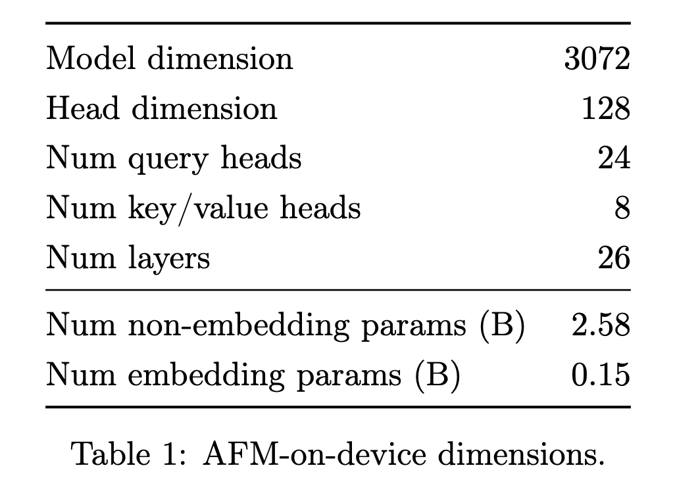
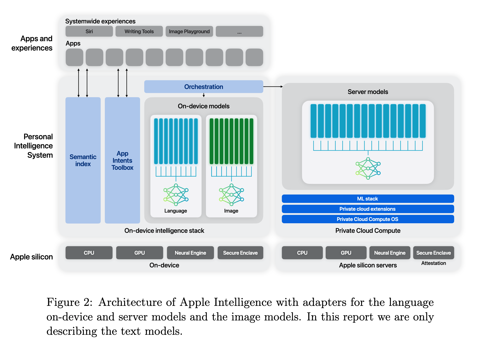
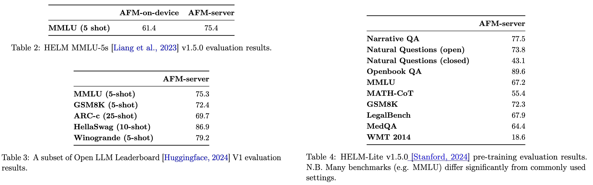
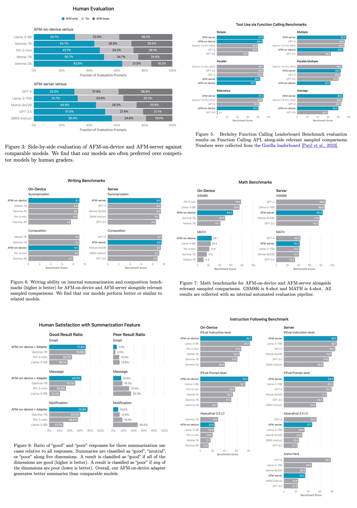

Agent WorkFlow Memory
For almost six months, I have been vocal about the differentiation between tool usage with LLMs and an agent. Most people correlate pure tool usage with agentic behavior, but IMHO that is only a subset of it. If we want to deploy agents, we need some planning and reasoning capabilities. Reasoning is abstract and hard to solve. Planning on the other hand comes in many flavors. If we want to go to system 2, we must augment planning capabilities with memory. After all, an intelligent system should be able to extract and learn from past behavior.
The paper Agent WorkFlow Memory, which came out last week, tries to solve some of these problems, and I think their choice is a good direction.

Why do we want to implement a memory module?
- Current language model-based agents struggle with long-horizon tasks and complex action trajectories.
- When presented with a new task, a common way to induce knowledge about the task is to perform in-context learning or fine-tuning.
- This approach works for a given task but fails to generalize across different tasks even if they share the same pattern. For example, planning a trip to a foreign country vs planning a local trip share common workflows with minor differences in the booking procedure.
- Inspired by how humans abstract common task routines from past experiences, we can implement a workflow memory module where each workflow represents a goal with a common routine extracted from available action trajectories.

Agent Workflow Memory
Let us define the system first. Suppose we have an LLM L, responsible for carrying out the workflows, a text-based Memory M, where the base memory contains documentation of built-in actions such as CLICK and TYPE.
UNTIL ai != STOP or curr_step > MAX_STEPS_ALLOWED do;
- To solve a task specified by an instruction in natural language q, the agent acts in an environment defined by a transition function T.
- At each time step ti, the environment state si gives observation oi. This observation is then passed into the model to generate action ai via L(q, M, oi) → ai.
- The action is executed in the environment and changes the state as T(si, ai) → si+1.
Each completed task forms an experience. This experience is used to extend the workflow memory. For each experience that we store, it includes:
- The instruction provided: q
- The trajectory contains the steps used to solve the workflow. Each step p comprises the current state, and the action taken i.e. p=(o, a)
- An induction module is to induce useful workflows W = {w} from the set of experiences E = {e} constructed from past or collected examples. These workflows are then added to the memory or subsequent task-solving.
LM-based Workflow Induction
- The induction module I induces a set of workflows W from one or more past agent experiences E.
- Module I prompts the agent to extract common sub-routines from one or more input experiences.
- If we want to extract common patterns from different workflows, we need to provide more fine-grained instructions. For example, instead of prompting “buy a cover for pixel9”, the prompt should be “buy a black leather cover for my pixel from Amazon and deliver it to my address”. Fine-grained instructions help extract common tasks or patterns easily.
- After the workflows W are induced, they are then integrated into the agent as auxiliary memory,
M + W →Mw. - When solving a given instruction q, the agent then produces a series of actions defined by
L(q, Mw, o) = L(q, M + W, o) → a
Offline Induction
- Assume that you have annotated examples that represent some experience for some workflow.
- Induction involves two standalone processes:
- Concatenate all training examples into a single prompt and feed them to the LM to create a set of workflows at ‘training’ time; I(Etrain) → Woffline
- Incorporates all induced workflows into the agent memory at inference time to solve test instructions L(q, M + W, otest ) → atest

Online Induction
Addresses the question: What if the agent has not seen this workflow in the past? Works in a supervision-free setting where only test queries are needed. Agents process test queries in a streaming fashion, where the agents conduct the loop of inducing, integrating, and utilizing workflows after running inference for each test task.
- Assume the default memory is M.
- At test timestep t, instruction qt is passed to the agent. The agent tries to solve the task by creating a trajectory. This instruction paired with the trajectory is the experience formed at this timestep.
- Using LLM as a judge, a binary label {0, 1} is assigned to the output of the trajectory denoting failure/success.
- Every time an experience is considered a success, it is transformed into workflow(s) I(et) → {wt}. {wt} is added into the agent memory Mt + {wt} → M(t+1)
